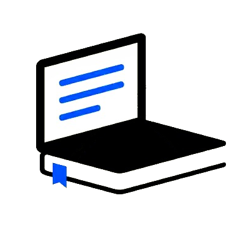

<mat-toolbar color="primary">
  <mat-toolbar-row>
    <!--  <span>HOME</span> -->
    <a style="display: flex; align-content: center;" routerLink="/"></a>
    <span class="spacer"></span>
    <a mat-button routerLink="/">Accueil</a>
    <a mat-button routerLink="/cours">Cours</a>
    <a mat-button routerLink="/login" *ngIf="!authService.user">Se connecter</a>
    <app-teacher-menu *ngIf="authService.user && authService.user.role === 'professeur'"></app-teacher-menu>
    <app-student-menu *ngIf="authService.user && authService.user.role === 'élève'"></app-student-menu>
    <a mat-button (click)="disconnect()" *ngIf="authService.user">Se déconnecter</a>
  </mat-toolbar-row>
</mat-toolbar>
